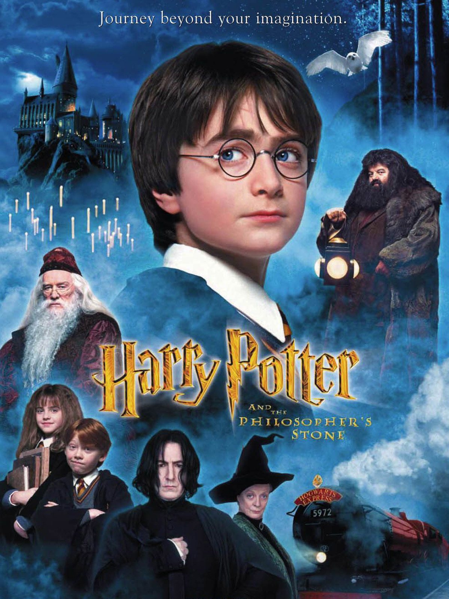
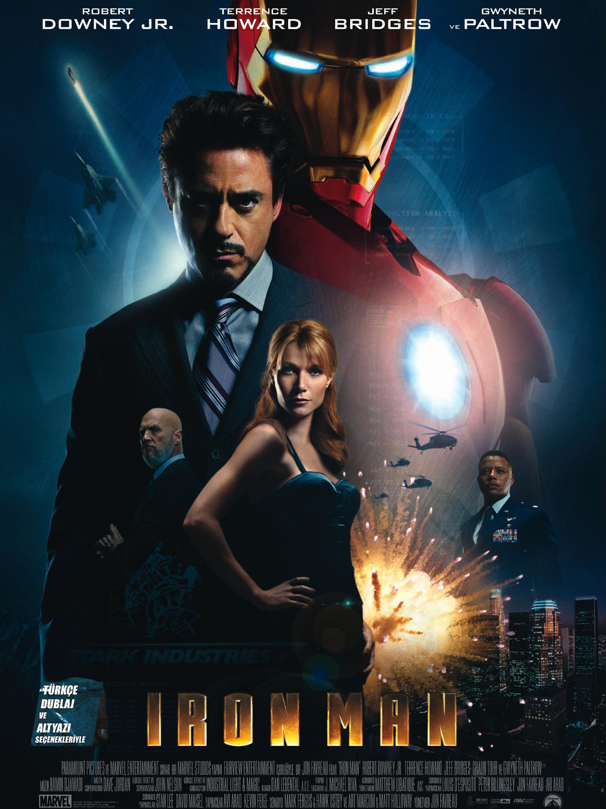

Ahmet Hakan Akpınar Kimdir ?
2002 Temmuz İstanbul da doğdum. İlk orta ve Lise ( Esenler Tuna Meslek Lisesi ) öğrenimimi İstanbul da tamamladım. İstanbul da Ailemin yanında büyüdüm. 4 kardeş 3 ü kız olan bir aile ye sahibim.
Liseyi Bilişim, Web tasarım alanı ile bitirdim. Lise son sınıfımda Daynex adlı şirkette Grafik bölümünde Staj yaptım. Sonra Grafik bölümü hoşuma gitmediğini farkettiğimde yazılım alanına yöneldim ayt puanım yetmediği için Bilgisayar Programcılığı bölümünü seçtim. Dgs ile Yazılım Mühendisliğine Geçis yapmak istiyorum
İlkokul
Mehmet Akif Ersoy İlkokulu
Ortaokul
Fatih Ortaokulu
Lise
Esenler Tuna Mesleki ve Teknik Anadolu Lisesi
Bilişim Teknolojileri Web Tasarım ve Programcılığı DalıÜniversite
Bilecik Şeyh Edebali Meslek Yüksek Okulu
Bilgisayar ProgramcılığıSinop Şehrinin En güzel detaylarına bakın
Sinop, Türkiye'nin Karadeniz Bölgesi'nin orta kesiminde bulunan Sinop ili'nin merkezi olan şehirdir. Karadeniz kıyısında, Boztepe Burnu'nun karayla birleşme noktasında yer alır. Sinop Kalesi, tarihi ve turizm açısından kentin en ilginç yeridir.
Daha fazlaAldığım Eğitimler
Photoshop
İleri Düzey
Esenler Tuna Mesleki ve Teknik Lisesi
Bilişim Teknolojileri Web Tasarım ve Programcılığı
Html/CSS
İleri Düzey
Esenler Tuna Mesleki ve Teknik Lisesi
Bilişim Teknolojileri Web Tasarım ve Programcılığı
C++
Temel Düzey
Bilecik Şeyh Edebali Üniversitesi Meslek Yüksek Okulu
Bilgisayar Programcılığı
C#
Temel Düzey
Bilecik Şeyh Edebali Üniversitesi Meslek Yüksek Okulu
Bilgisayar Programcılığı
SQL
Temel Düzey
Bilecik Şeyh Edebali Üniversitesi Meslek Yüksek Okulu
Bilgisayar Programcılığı
Beceriler
Bildiği Diller
İngilizce :
Okuma: Orta
Yazma: Orta
Dinleme: Orta
Konuşma: Orta
Sportif Aktivite
Futbol: Amator Futbol Klübü, Lise, Üniversite
Basketbol: Ortaokul
İş Tecrübesi
Daynex: Grafik Alanı Stajerlik
Web Sitesi: Daynex.com.tr
En Beğendiğim Filmler

Harry Potter
Harry Potter, İngiliz yazar J. K. Rowling tarafından yazılmış yedi fantastik romandan oluşan bir seridir. Romanlar, Hogwarts Cadılık ve Büyücülük Okulu'nda eğitim gören genç büyücü Harry Potter ile arkadaşları Hermione Granger ve Ron Weasley'nin yaşamlarını konu alır.

The Platform
Platform, Galder Gaztelu-Urrutia tarafından yönetilen 2019 yapımı İspanyol sosyal bilimkurgu-korku filmidir. Oyuncu, platforma sigarayı bırakmayı ve diploma almayı hedefleyerek kendi isteği ile girer, fakat sistemin nasıl çalıştığını bilmemektedir.

Iron Man Tüm serisi
Iron Man, 2008 yapımı, Marvel Comics Şirketi’nin yayımladığı ilk Marvel Sinematik Evreni filmidir. Demir Adam isimli çizgi romanın beyazperde uyarlamasıdır. Robert Downey Jr., filmin kahramanı Demir Adam'ı canlandırmıştır. Iron Man